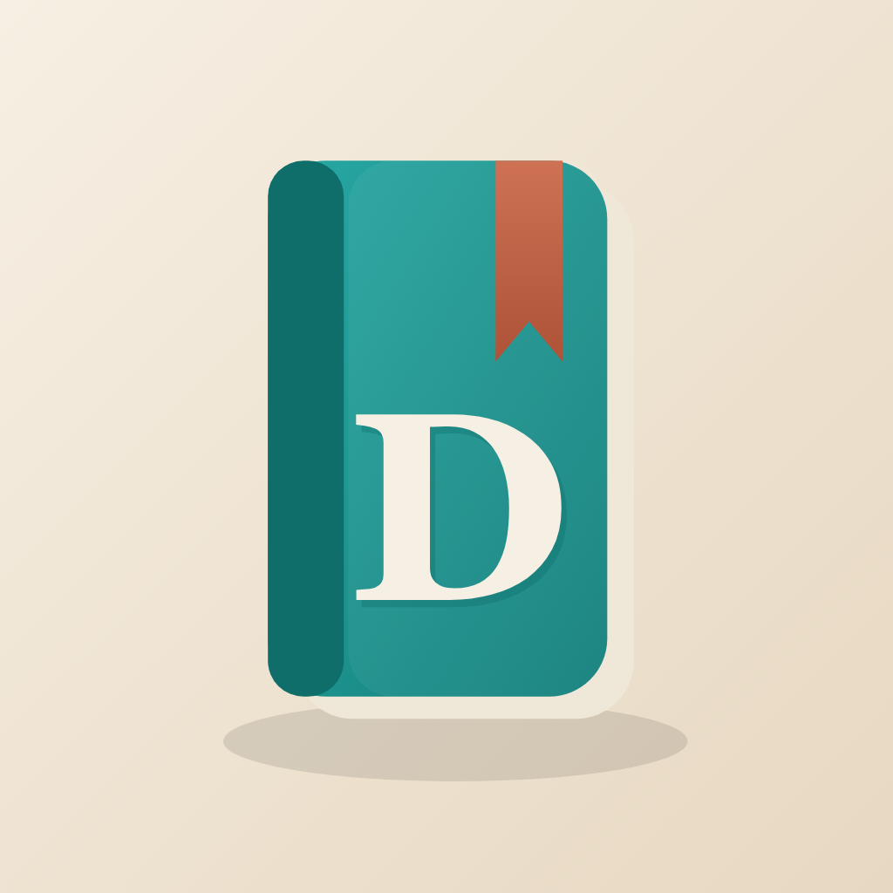

An honest comparison from the person who made Daykeep — including where Day One is the better choice.
Day One is a mature, full-featured journal with a wide range of attachments, more platforms and a polished feature set, and it is sold as a subscription for its full features. Daykeep is a smaller, simpler journal for iPhone, iPad and Mac that does one thing: text and photos, with captions. It is free to use, with an optional one-off purchase and no subscription.
If you want audio, video, PDFs or an Android or web app, choose Day One. If you mainly write and add photos, and you would rather pay once than every year, Daykeep is built for you.
| Daykeep | Day One | |
|---|---|---|
| Price model | Free to use. Optional one-off “Daykeep Plus” purchase. No subscription. | Free tier with limits; full features through a subscription. Check Day One’s site for current pricing. |
| Content | Text and photos, with captions | Text, photos, video, audio, drawings, PDFs and more |
| Platforms | iPhone, iPad, Mac | Apple devices, plus other platforms (see Day One) |
| Sync | Through your own iCloud — no account to create | Day One’s own sync service and account |
| Privacy | No account, no analytics, no tracking. “Data Not Collected” on the App Store. | See Day One’s own privacy policy |
| Printing | Make a book or PDF yourself (watermark-free with Plus), or send a journal to Mosaic Collage Maker for a designed photobook | See Day One’s site for its print options |
| Switching | Imports a Day One export; exports back to Day One format, free | — |
Comparisons are general and apps change; check each app’s own page for current details.
Daykeep leaves audio, video and PDF attachments out on purpose, to stay small and simple.
In Day One, export a journal as JSON. In Daykeep, choose Import from Day One and pick the zip. Entries, photos, tags, dates, places and weather come across into a new journal, and your original is untouched. See the step-by-step guide.
Daykeep is free to use with an optional one-off purchase and no subscription. It covers text and photos only.
More than two journals, books and PDFs without the watermark, and splitting or combining journals. One purchase covers iPhone, iPad and Mac. Journaling, unlimited photos, iCloud sync, backup, restore and Day One import and export stay free.
Text, photos, captions, tags, dates, places and weather come across. Audio, video and PDF attachments are not supported in Daykeep, so keep your Day One journal if those matter.